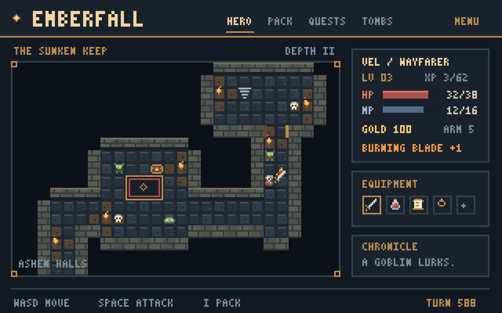
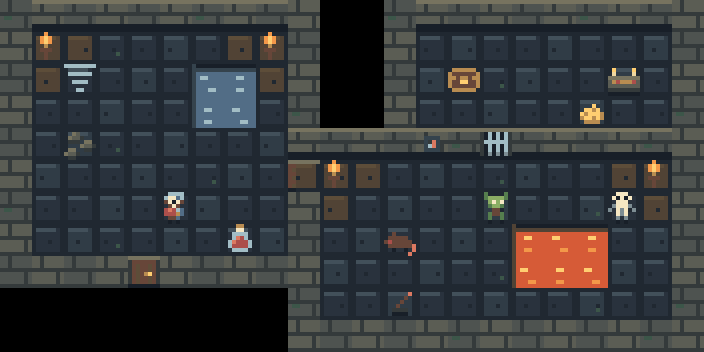
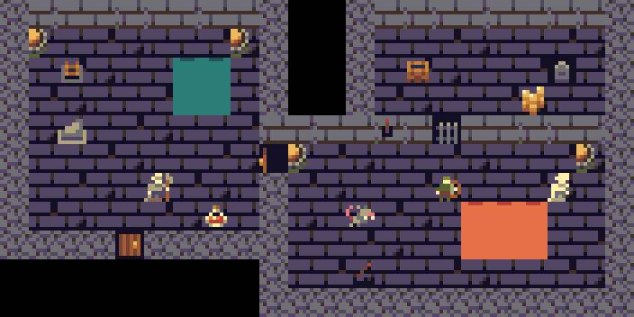
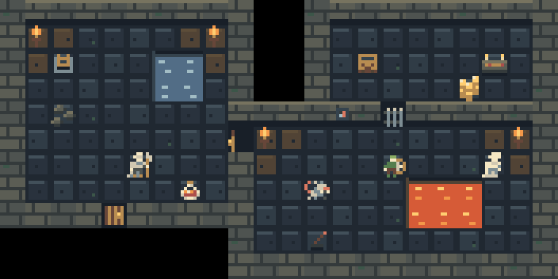
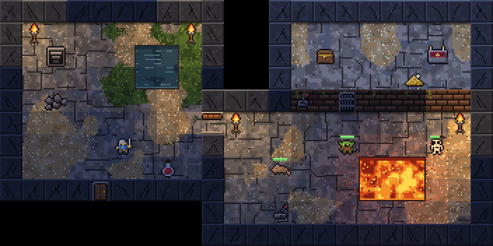

Where it started


The game still paints every tile in code. These are the looks being tried for its first real pixel art, each one drawing the same test room. None is chosen yet. Click a picture to see it full size.






Mini Medieval art by VEXED, v3x3d.itch.io/mini-medieval, CC BY 4.0.